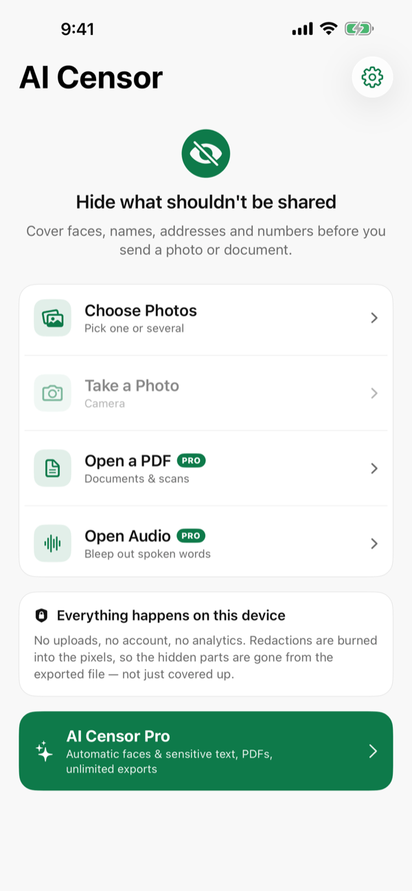
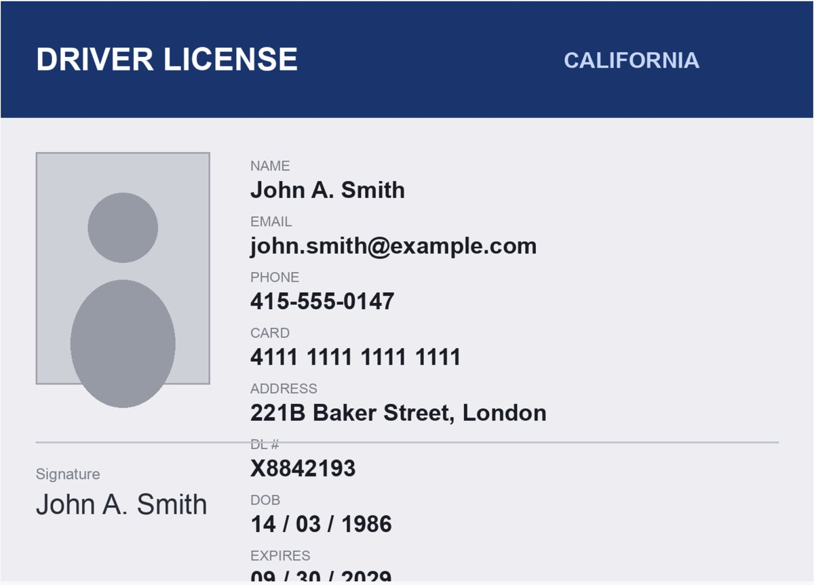
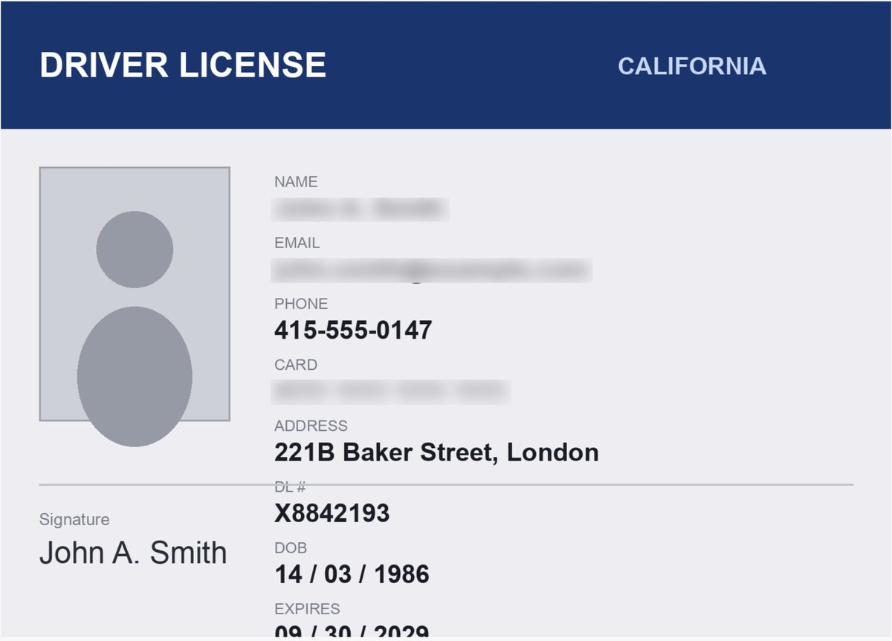
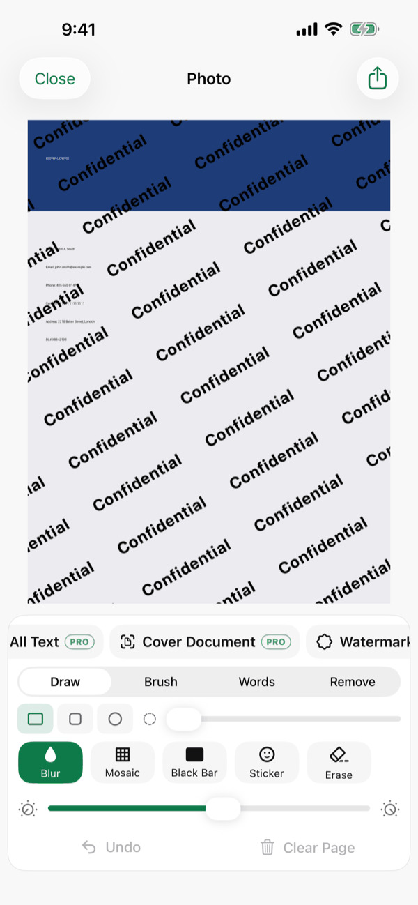
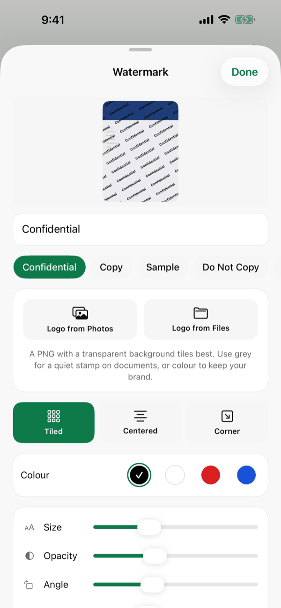
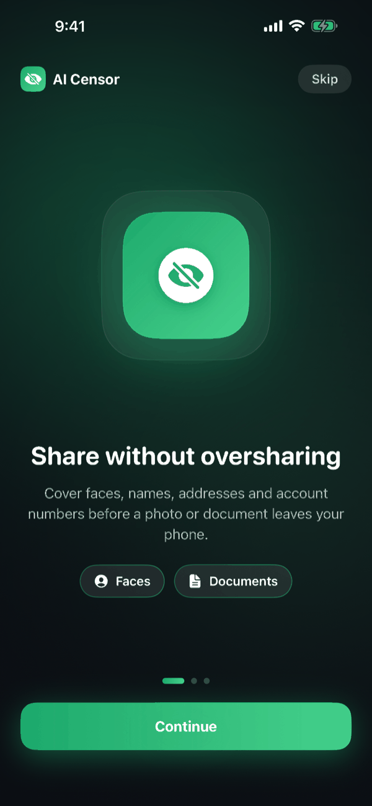
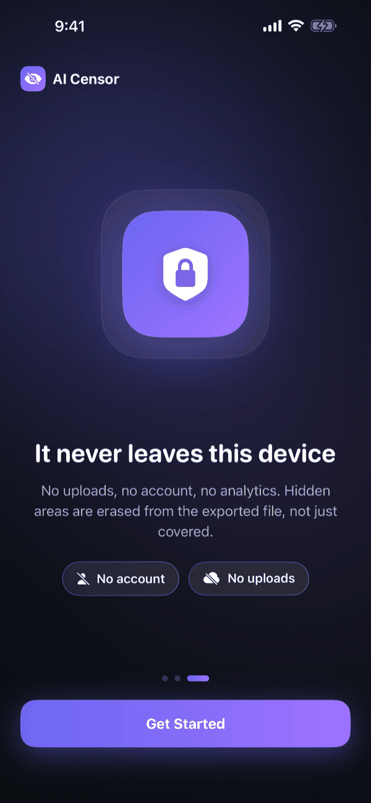
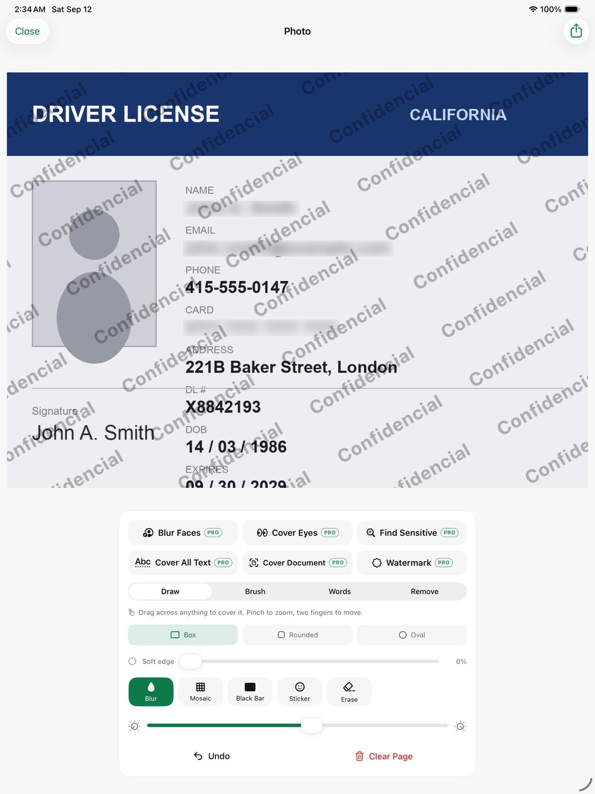

Blur every face in one tap
Cover whole faces, or choose to cover the eyes only when you want the photo to stay recognisable as a scene but not as a person.
AI Censor covers faces, names, addresses, phone numbers and account numbers in photos, PDFs and audio — before the file leaves your phone.
Coming to the App Store. Free to redact by hand — Pro unlocks automatic detection.

Two screenshots of the same document in the editor — the second after three boxes were drawn across the name, the email and the card number. Nothing here is a mockup.


Drawn by hand, in three dragsPoint it at a file, let it find the sensitive parts, then adjust anything by hand.
Cover whole faces, or choose to cover the eyes only when you want the photo to stay recognisable as a scene but not as a person.
Finds emails, phone numbers, card numbers, addresses and ID numbers in the image. Or cover all text at once, or cover a whole document in a single step.
Drag a box over an area, paint freehand with an adjustable brush, or tap individual recognised words to hide exactly those.
Every style has adjustable strength and optional soft edges, so a redaction can look deliberate rather than like a smudge.
Open a multi-page PDF, redact page by page, and export a flattened copy where the hidden areas are part of the page image.
The recording is transcribed on the device, so you can pick the names or numbers that were said out loud and bleep them in the exported audio.
Add a tiled, centred or corner watermark — text or your own logo, with the background removed automatically — and set size, opacity, angle and colour.
Exported files carry no EXIF, no GPS and no device data. Save a new copy, or replace the original in your library.





A redaction app that sends your documents to a server would defeat its own purpose. This one does not have a server to send them to.
One honest exception: if you choose Replace Original, the app asks Photos to replace the asset in your own library, and Photos keeps that asset’s original capture date and location on the record. Export a new copy instead if you would rather not keep them.
Redact by hand for free. Pro is for the automatic work — and for PDFs, audio and watermarks.
$0
Redact by hand with every tool and style, and export up to 3 files a day.
$4.99 / month
Automatic detection, PDFs, audio bleeping, watermarks and unlimited exports.
$19.99 / year
Everything in Pro, billed once a year, after a 3-day free trial.
$29.99 once
Everything in Pro, paid once. No subscription.
Subscriptions renew automatically unless cancelled at least 24 hours before the end of the current period, and can be managed or cancelled in your Apple ID settings. Purchases are handled by Apple — the app never sees your payment details. Terms of Use.
Write to us and a person will answer. Bug reports and feature requests both welcome.
essentialdevteam@gmail.com